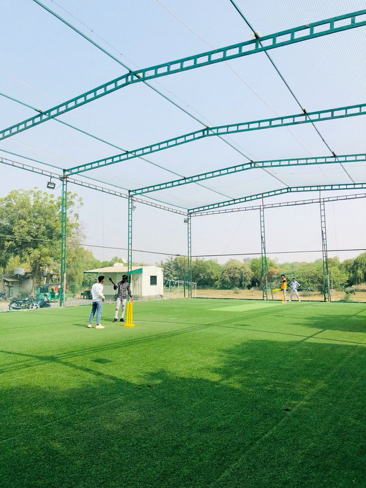
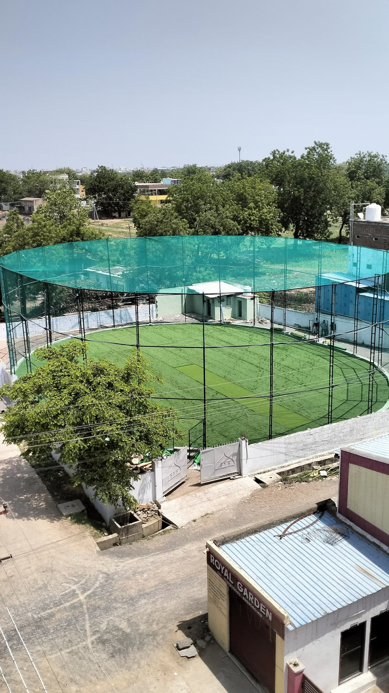
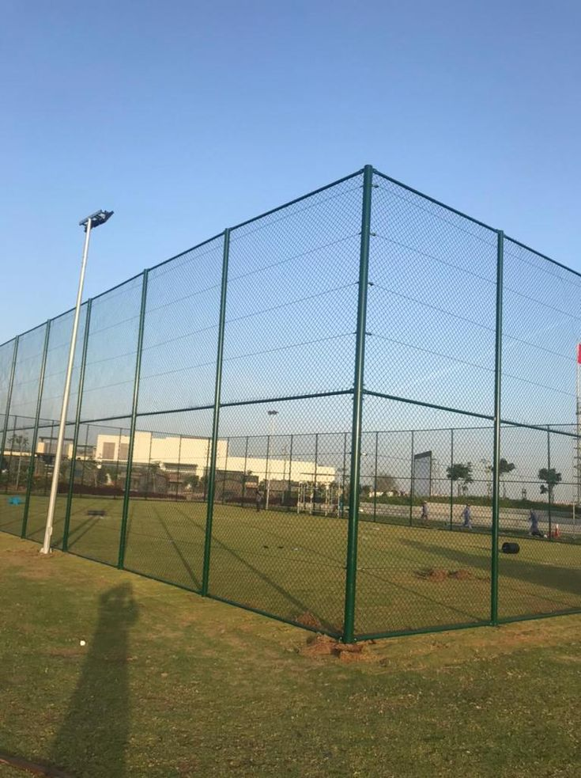
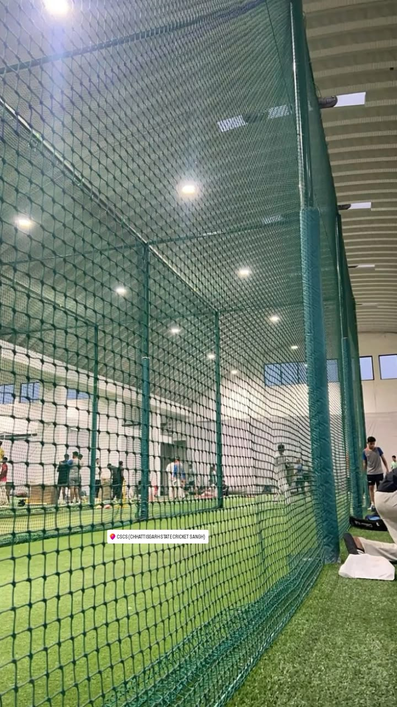
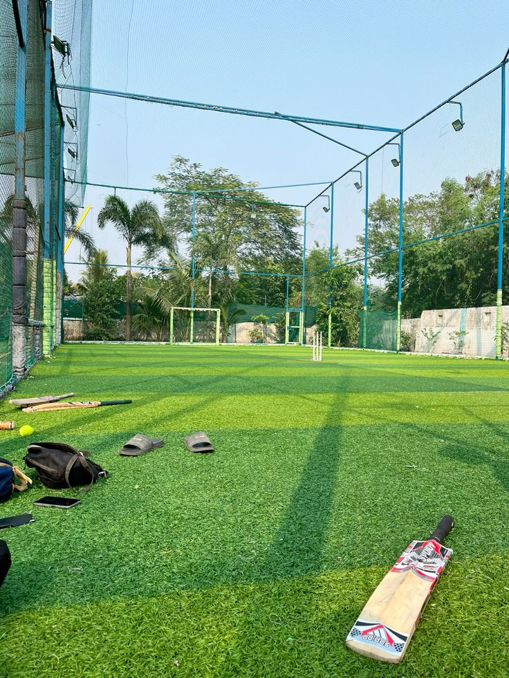

Simon Sports Nets provides professional Sports Safety Nets in Nagasandra for cricket practice areas, football grounds, badminton courts, schools, academies, apartments, and recreational spaces. Our sports netting solutions are planned according to the size, height, playing area, and specific requirements of each location.
Our Cricket Nets in Nagasandra are suitable for cricket academies, practice pitches, schools, clubs, residential grounds, and private training areas. We provide netting around cricket practice zones to help contain cricket balls within the designated area and create a more controlled practice environment.
For larger sports facilities, Simon Sports Nets also provides Green Sports Nets in Nagasandra for cricket, football, badminton, and other outdoor applications. The netting can be planned for practice enclosures, boundary areas, training zones, and selected recreational spaces according to the site layout.
If you are looking for Cricket Practice Nets Near Nagasandra, Sports Nets Near Me in Nagasandra, Football Safety Nets in Nagasandra, or Badminton Nets in Nagasandra, Simon Sports Nets can provide customized netting based on the dimensions and usage of your sports area.
From compact backyard practice spaces to larger training grounds, our Sports Netting Solutions in Nagasandra focus on appropriate net height, coverage, fixing points, and practical installation. We serve sports facilities, educational institutions, training academies, and residential properties across Nagasandra, Bangalore.
Simon Sports Nets provides customized Sports Safety Nets in Nagasandra for cricket practice grounds, sports academies, schools, clubs, and residential playing areas. Our netting is planned according to the dimensions, height, and purpose of each sports space.
Our Cricket Practice Nets in Nagasandra are suitable for academies, schools, clubs, and private practice areas. The netting helps contain cricket balls within the designated training zone.
Simon Sports Nets provides Green Sports Nets in Nagasandra for cricket, football, badminton, and other recreational areas. Net height, coverage, and fixing arrangements can be planned according to the playing environment.

Explore our Sports Safety Net Solutions in Nagasandra, including cricket practice nets, green sports nets, football netting, badminton nets, and customized sports enclosures for academies, schools, clubs, and recreational spaces.


Simon Sports Nets provides practical Sports Safety Nets in Nagasandra for cricket academies, schools, clubs, training grounds, residential spaces, and recreational facilities. Each installation is planned around the size, height, and purpose of the sports area.
Our Cricket Nets in Nagasandra are suitable for batting practice, bowling practice, coaching areas, and dedicated training enclosures. We also provide Green Sports Nets for football, badminton, and other sports where controlled ball containment is required.
At Simon Sports Nets, we consider the required net height, coverage area, support points, and installation conditions before fitting the netting. Our Sports Netting Solutions in Nagasandra can be customized for compact practice spaces as well as larger sports grounds and training facilities.

Sports Netting Projects
Customized Planning
Sports Netting Solutions
Support Available
From cricket practice areas and football grounds to badminton courts and school sports spaces in Nagasandra, Simon Sports Nets focuses on suitable net coverage, secure fixing, proper height, and a practical setup for regular sports activities.




Simon Sports Nets provides sports netting solutions in Nagasandra for cricket practice areas, football grounds, badminton spaces, schools, academies, clubs, and recreational facilities. Each project is approached according to the type of sport and the layout of the available space.
Our Cricket Nets in Nagasandra can be arranged for batting practice, bowling sessions, coaching areas, and dedicated training enclosures. We also provide Green Sports Nets for suitable outdoor sports applications where a defined netting boundary is required.
Instead of using the same setup for every ground, we consider the playing area, available height, required coverage, support structure, and access points before planning the netting. This helps create a practical arrangement for the intended sports activity.
For academies, schools, clubs, and private sports spaces in Nagasandra, Bangalore, our team can plan netting for both compact practice zones and larger outdoor areas. Customers searching for Sports Nets Near Nagasandra can discuss their ground dimensions and application with Simon Sports Nets before installation.